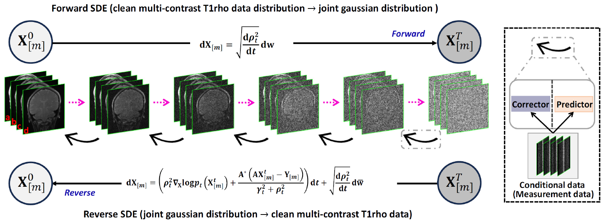
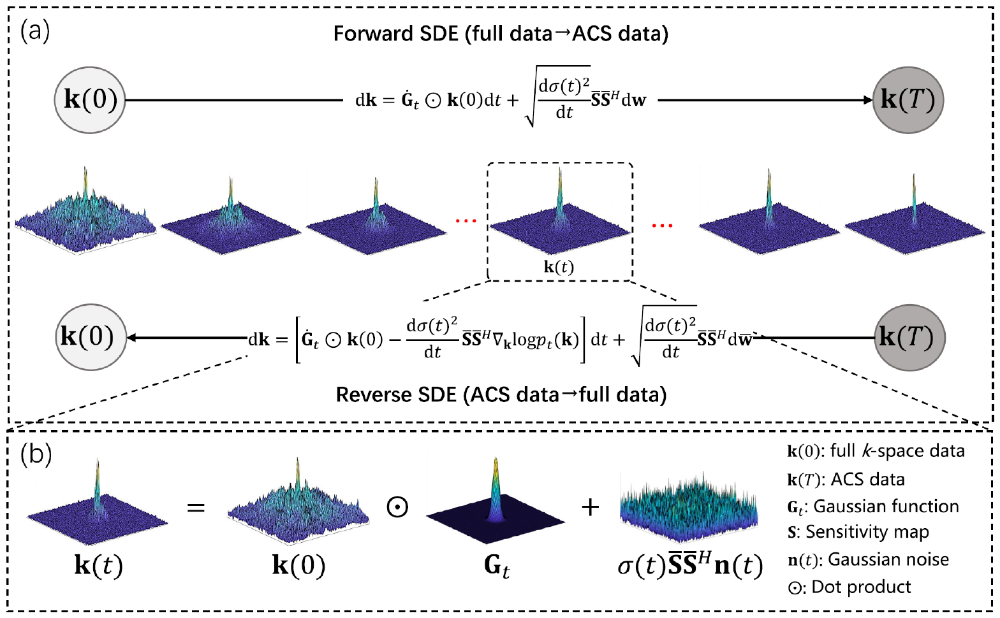

I am a postdoctoral researcher at the Shenzhen Institutes of Advanced Technology, Chinese Academy of Sciences (SIAT, CAS), co-supervised by Prof. Dong Liang (梁栋). I am affiliated with the National Key Laboratory of Medical Imaging Science and Technology Systems at SIAT (Director: Hairong Zheng). My primary research interests include medical imaging, deep learning, and signal processing. In addition, I have worked on several projects involving hardware–software co-design.
I am very fortunate to be advised by Prof. Dong Liang from the Lauterbur Research Center for Biomedical Imaging and the Medical AI Research Center. I worked closely with Prof. Zhuo-Xu Cui. Previously, I was also advised by Prof. Dong Liang and Prof. Haifeng Wang during my master’s studies.
E-mail: cc.liu at siat.ac.cn / liuc23539 at gmail.com / sober_235 at 163.com
🔥 News
To be updated.
📝 Publications
- It’s currently being updated; Please feel free to see my Google Scholar profile.

J-Score: Joint Distribution Learning With Score-Based Diffusion for Accelerating T1ρ Mapping
Congcong Liu, Yuanyuan Liu, Chentao Cao, Jing Cheng, Qingyong Zhu, Tian Zhou, Chen Luo, Yanjie Zhu, Haifeng Wang, Zhuo-Xu Cui†, Dong Liang† (†Co-Corresponding Author)

Physics-Informed DeepMRI: k-Space Interpolation Meets Heat Diffusion
Zhuo-Xu Cui*, Congcong Liu*, Xiaohong Fan, Chentao Cao, Jing Cheng, Qingyong Zhu, Yuanyuan Liu, Sen Jia, Haifeng Wang, Yanjie Zhu, Yihang Zhou†, Jianping Zhang, Qiegen Liu, Dong Liang† (*Equal Contribution, †Co-Corresponding Author)
- Under construction
🥇 Honors and Awards
- 2024.10 2024 National Scholarship for Graduate Students.
- 2024.05 International Society for Magnetic Resonance in Medicine (ISMRM) Stipend Award.
🔍 Service
- Journal Reviewer: IEEE Transactions on Medical Imaging (TMI), IEEE Transactions on Computational Imaging (TCI), Artificial Intelligence Review, The International Journal of Cardiovascular Imaging, etc.
- Conference Reviewer: International Conference on Medical Image Computing and Computer Assisted Intervention (MICCAI), IEEE International Conference on Bioinformatics and Biomedicine (BIBM), etc.
📚 Educations
- *2020.09 - 2025.01 *, University of Chinese Academy of Sciences (UCAS), Pattern Recognition and Intelligent Systems.